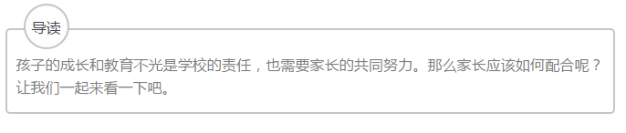
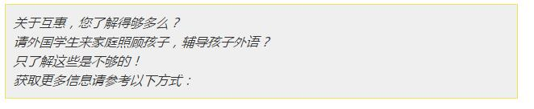

互惠动态
|
|
最牛教师揭秘：学生之间真正比拼的，是家长的6点配合

班级里成绩最好的学生，通常不是第一个举手的，当然也不会是不举手的。
认真观察过班里的孩子那些第一个举手的孩子，通常性子都比较急，其实脑子里没有琢磨清楚答案，就忍不住想要回答。
建议
1、如果你家孩子属于这种类型，建议培养孩子稳重的性格，日常可以加强静坐或者练习书法等这类磨性子的训练。
2、如果孩子常年不发言，那说明他们内心对外界的评价很看重，而且对自己也缺乏信心，建议父母给孩子多一些肯定和鼓励，少一些批评教育。
从上课找试卷的速度来说，越快找到试卷的学生，成绩越好。
每次讲解试卷的时候，都会发现最快找到试卷的，一般都是成绩比较好的学生因为他们有良好的学习习惯，会把试卷分门别类进行整理。而成绩一般的学生试卷一般是随便找本书往里一夹，要用的时候就要花费大量的时间去找。
建议
1、家长帮孩子养成整理资料的习惯，将考试的试卷按照科目和时间顺序装进不同的文件袋内，一方面可以提高孩子听课的效率；另一方面，整理的过程也是一个复习的过程。
2、平时在家，建议让孩子帮忙整理房间，培养孩子有序、高效的意识。这对孩子今后的学习和生活都是有好处的。
晚上超过12点睡觉的，基本上都不是学习最好的学生。
曾对班上学生的入睡时间进行调查，惊奇的发现，平时成绩比较优秀的学生一般都在12点前入睡，而睡得最晚的竟然成了成绩中等的学生。成绩中等的这些学生很努力，他们采取了时间战，短期内会有效果。但是长期以往，因为经常熬夜，睡眠时间严重不足，上课就经常打瞌睡，成绩停滞不前。
建议
1、这类学生最突出的表现，就是认为自己没有找到好的学习方法，成绩没有提高。如果自己家的孩子也这样，请一定要理解孩子的不容易。同时，要求孩子12点前按时睡觉，态度一定要坚定。
2、一个教育研究统计结果显示：90%以上的“差学生”是上课走神造成的，认真听讲比起任何学习方法都重要，一定要保证课堂的高效率。
每个学生都会出现“一错再错”现象，但是优秀学生“一错再错”的几率很小。
有两个学生是以相同的成绩进入初中的，第一次期中考试后，A同学把错题整理到错题本上，而B同学只是在试卷上写了答案。后来一次考试，出现类似题目，A答对了，B还是错了。
建议
1、一定要为孩子准备错题本，让理清解题思路并记录到错题本中。
2、大量的调查证明：优秀学生之所以能保持好成绩，关键是因为把知识点真正的弄懂了，而且消化成自己的知识。
就辅导资料的数量而言，中等生最多，优等生不上不下。
成绩好的学生虽然买的辅导资料不多，但是每一本都做完了，而且书上用各种颜色的笔写的满满的。标出重点和疑难点，尤其是学校发的辅导书，做的尤其认真。
反观那些买了很多辅导书的同学，其实很多都空着，每一本只做了一部分，而且因题量太大，很多题目都只写了答案。
建议
1、根据自身学习情况进行选择，尖子生可找一套有一定难度的参考书，比如奥数资料，开拓一下解题思维；中等生合适难度不大，但包含了详细例题分析和解题过程的参考书；学习困难生应该紧跟老师的步伐，先吃透课本内容。
2、多听老师的经验，购买正规出版社的辅导书。
3、做题最终的是要学会总结，对题型进行分析，形成自己的知识框架。
下课帮别人辅导作业的都是成绩最好的学生。
每次下课去班级里，经常会发现有学生在帮同学解题，而这些学生往往成绩不错。
建议
1、在孩子小时候就要帮助孩子养成这样的习惯，可以让孩子把每天所学内容大致的讲一遍，这样可以帮孩子理清知识体系，也加深印象，一般能讲清楚，就表明孩子已经理解透彻了。
2、为孩子建立学习角，鼓励孩子邀请同学们来家里学习，组成互帮互助小分队。这样不仅能提高学习效率，同样还可以帮助孩子提高人际交往能力。
学习的比拼，深入学生学习习惯的比拼。拥有良好学习习惯的学生，不管身处哪种学习环境，都能取得优秀的学习成绩。不少学生家长只关注孩子每次的考试成绩，而没有在平时帮助学生养成良好的学习习惯。
